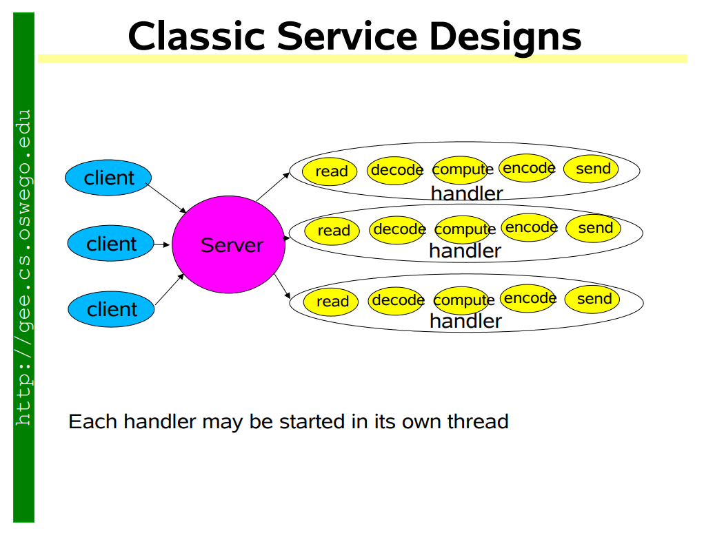
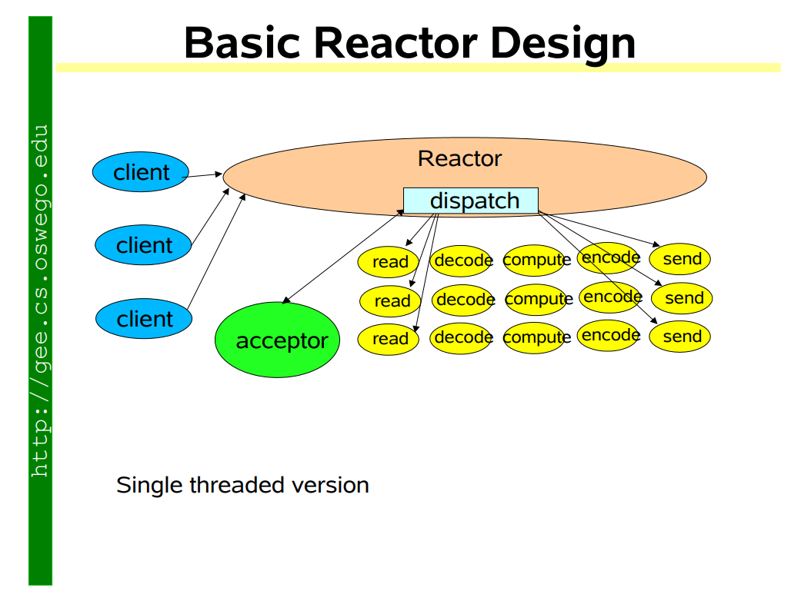
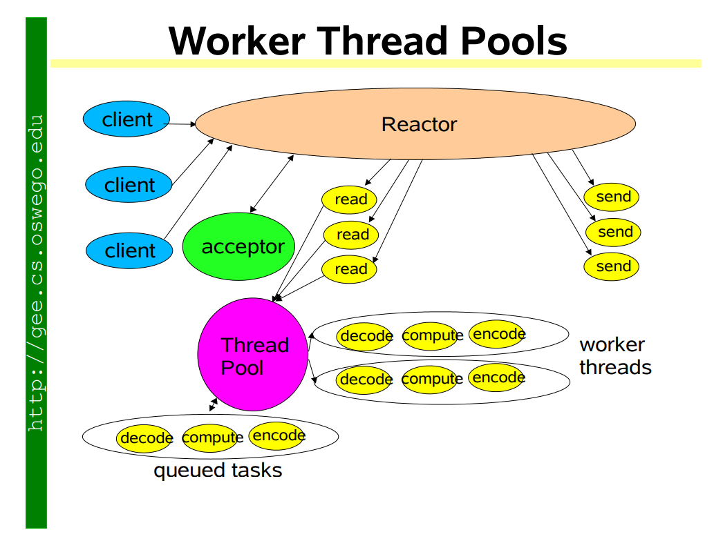
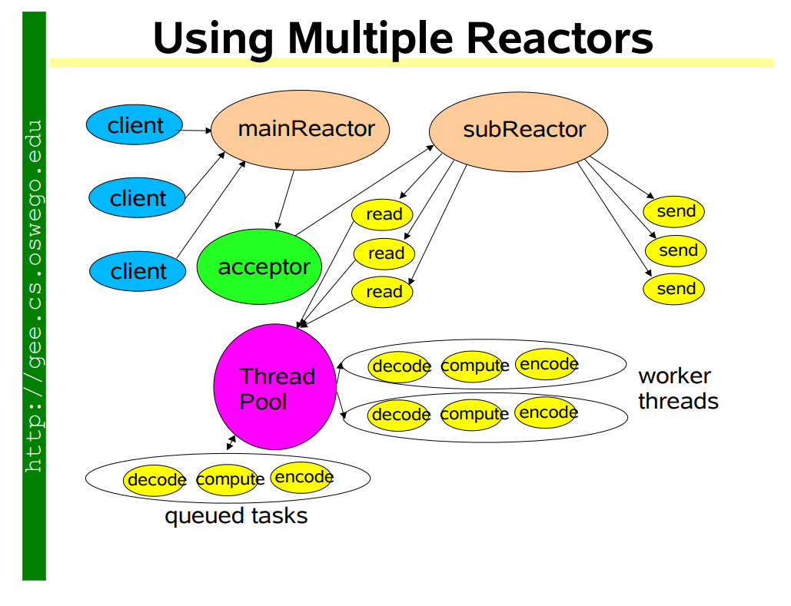

Scalable IO in Java
The original reference is from Scalable IO in Java { open=new }
Classic way of handle one requst pre thread

Add design multiple implementations of Event Driven design
Single threaded version [Nodejs]

Thread Pool version

Multiple reactor

0.1.0*